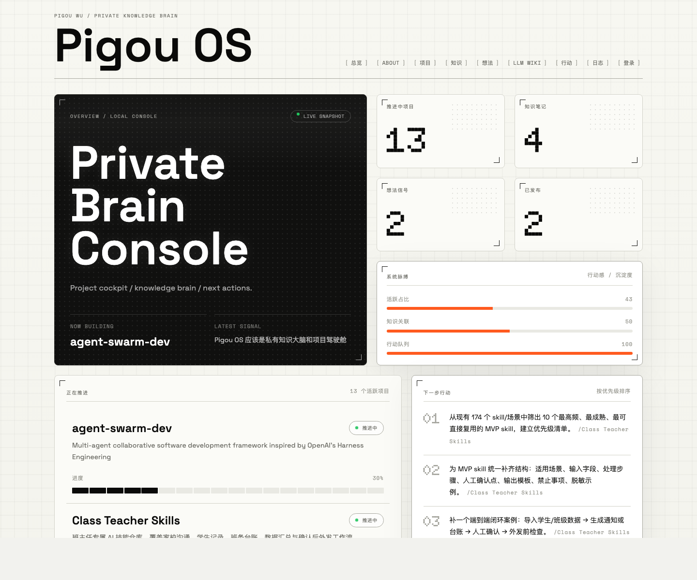
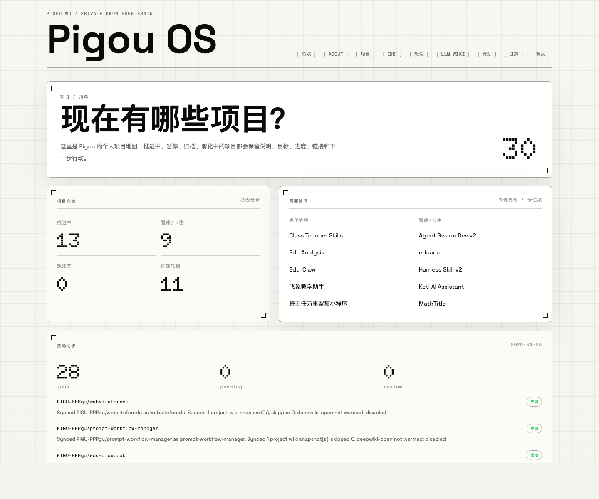
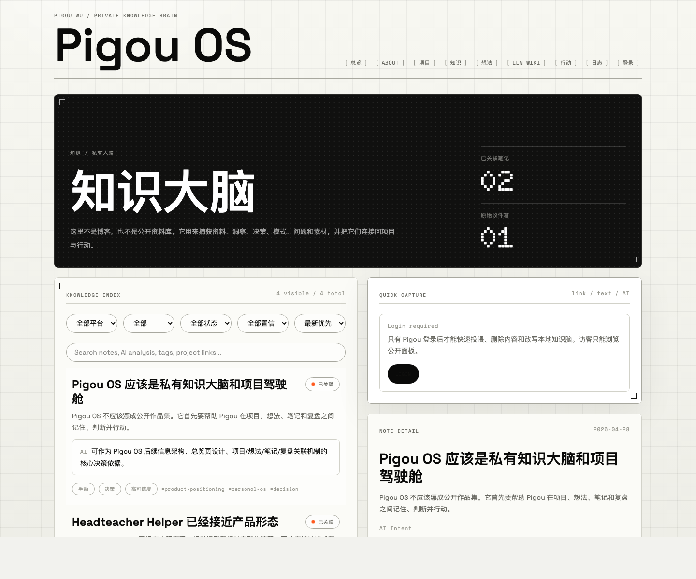
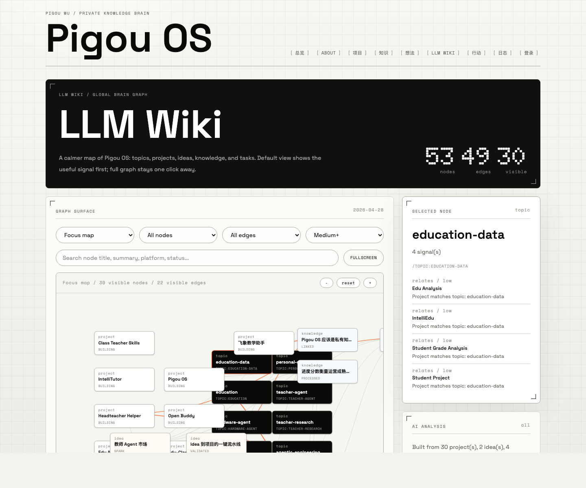
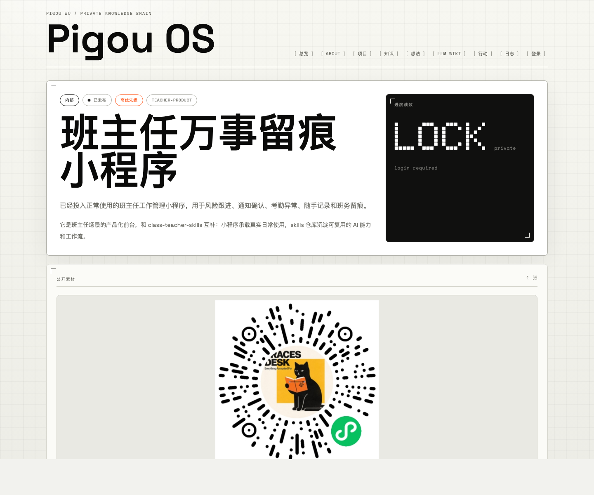
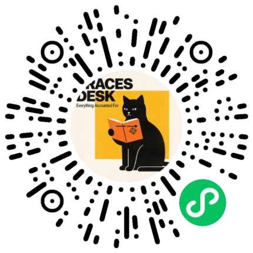
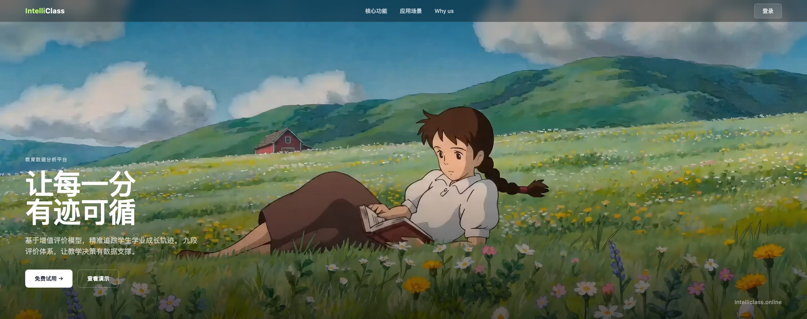
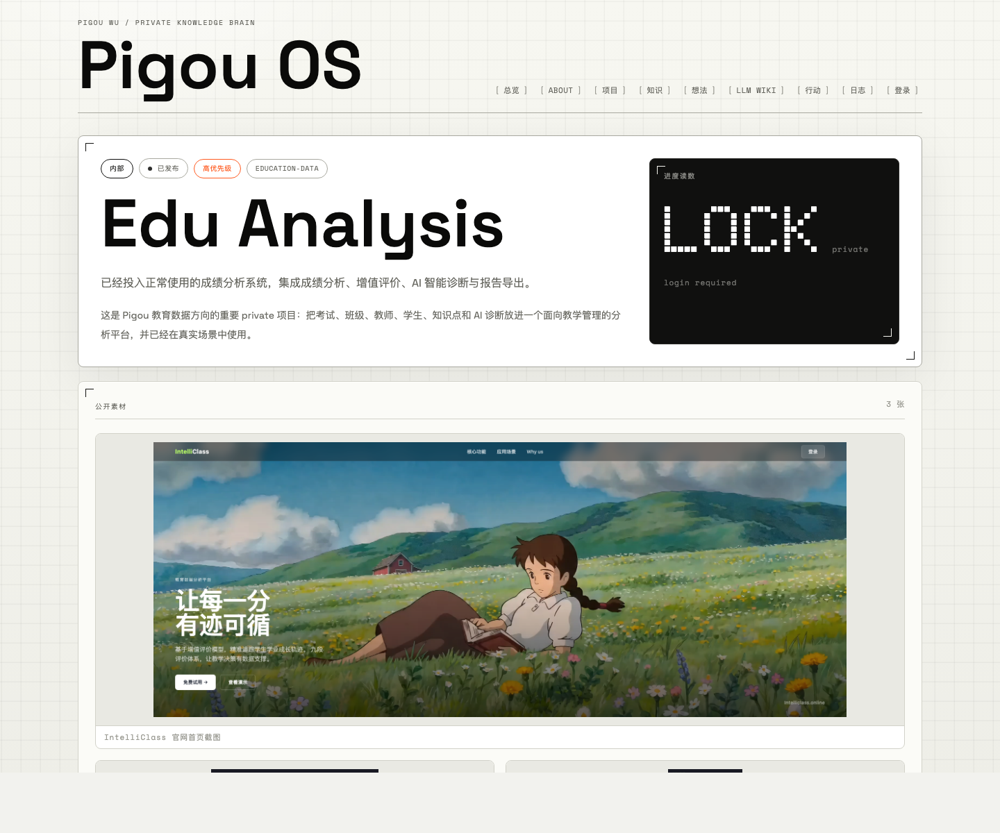
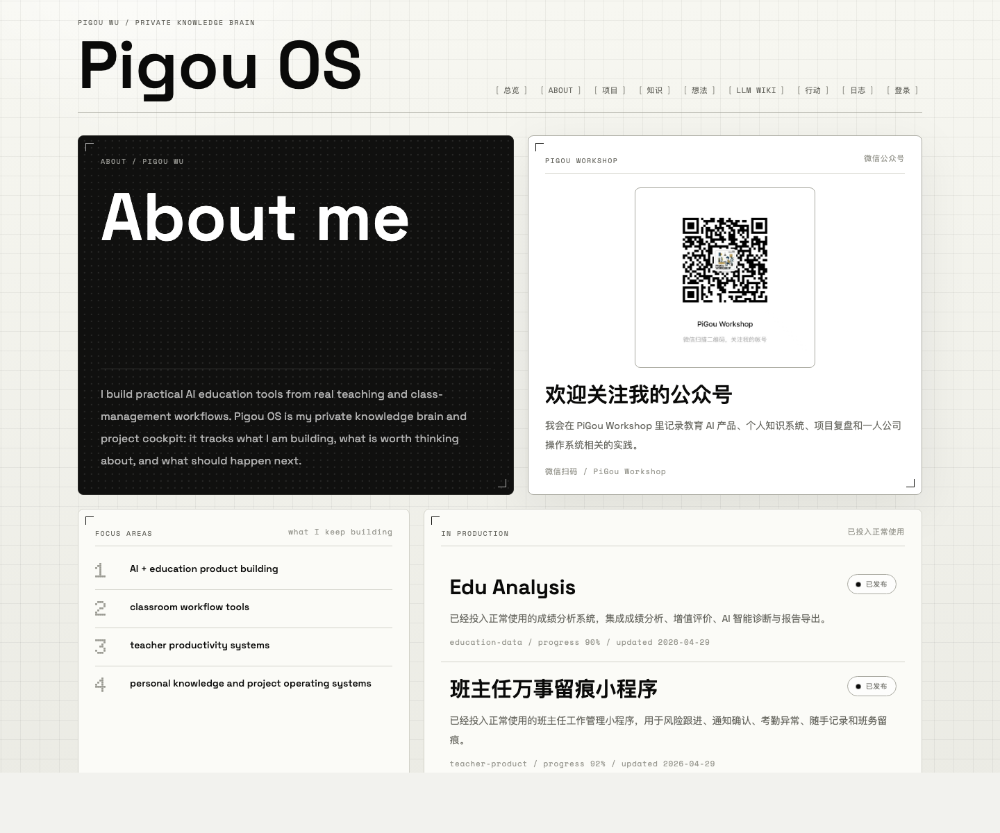
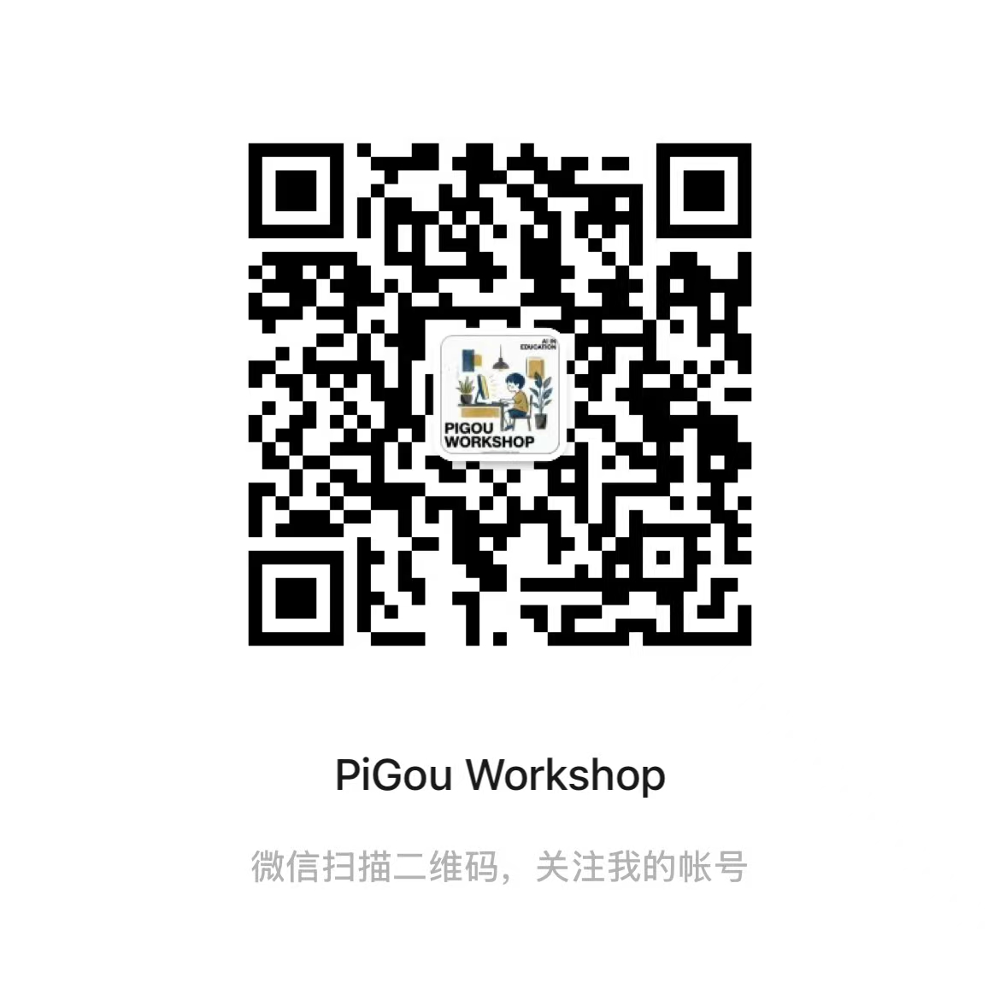

最近把自己的个人网站折腾了一下，最后做成了一个叫 Pigou OS 的东西。
一开始想得很简单：弄个个人主页，放点项目、放点介绍，差不多就行。
结果做着做着发现不太对。我其实不是缺一个“展示我是谁”的页面，我更缺一个地方帮我把脑子里那些乱七八糟的项目和想法摊开：
所以它就慢慢变成了一个偏私人的小系统：我的项目整理器 + 资料收纳箱 + 想法孵化器。

为什么突然想做这个？
因为我发现自己手上的东西有点多。
有教育产品，有小程序，有成绩分析系统，有 AI agent，有一些开源项目，还有一堆临时冒出来的想法、截图、链接、踩坑记录。
这些东西散在 GitHub、微信、备忘录、聊天记录里的时候，看起来好像很多，但真正要推进的时候，经常会变成：我上次做到哪了来着？
我就想，干脆做一个东西，每次打开能让我快速回到状态。
项目进度这件事，我不想靠拍脑袋
之前如果让我给一个项目写“进度 60%”，其实很尴尬。60% 是什么意思？代码写了 60%？功能做了 60%？还是我感觉它差不多了？
所以现在我让 Pigou OS 自己去看 GitHub、README、代码结构、任务、日志、截图，再让 AI 给一个判断。
它不一定永远准确，但至少比我随手填一个数字靠谱一点，而且会附上理由。

这个对我还挺有用的。因为很多项目不是没做，而是卡在奇怪的位置：有的代码很多但没人知道怎么用，有的已经上线了但没好好介绍，有的只是一个想法但我一直舍不得删。
我还想解决一个问题：资料太容易变成收藏夹
很多时候看到一个链接，觉得“这个有用”，然后收藏一下。过几天就忘了。
所以我做了一个快速投喂。链接丢进去之后，它会先帮我分析：这东西大概是什么，跟哪个项目有关，有没有可能变成一个任务。
后面我还加了一个 LLM Wiki，把项目、想法、资料、行动都放到一张图里。虽然现在还不完美，但已经能看到一些关系了。


当然，不只是“还在想”的东西
这里面也放了一些已经真的在用的项目。不是为了显得项目很多，主要是想把这些东西有个地方讲清楚。
班主任万事留痕小程序
这个小程序已经可以正常用了。主要是面向班主任日常工作，比如风险跟进、考勤异常、通知确认、随手记、智能扫描、晨间考勤、成绩分析这些。
已投入使用 小程序 教育工具


成绩分析系统 / IntelliClass
成绩分析系统也已经投入正常使用了。它主要围绕考试、班级、教师、学生、知识点和 AI 诊断，做成绩分析、增值评价、报告导出这些事。
已投入使用 成绩分析 增值评价 AI 诊断


后面想继续怎么做？
我希望它最后能变成一个我每天都会打开的小面板。
不是那种“立刻改变人生”的效率系统，没那么夸张。就是当我脑子有点乱的时候，打开它，能看到：现在有哪些项目，哪些该继续，哪些该停一停，下一步可以先做什么。
后面我会继续把自动同步、快速投喂、LLM Wiki 这些地方打磨一下。现在还很早，但已经有点那个意思了。

最后，欢迎关注一下我的公众号
如果你对 AI、教育工具、个人知识系统、独立产品这些东西感兴趣，可以关注一下 PiGou Workshop。
后面我应该会继续写这些项目怎么做出来的，中间踩了哪些坑，以及我怎么用 AI 帮自己少干一点重复活。
PiGou Workshop
微信扫码关注。后面会继续写 Pigou OS、班主任工具、成绩分析系统，还有一些 AI agent 的折腾记录。
